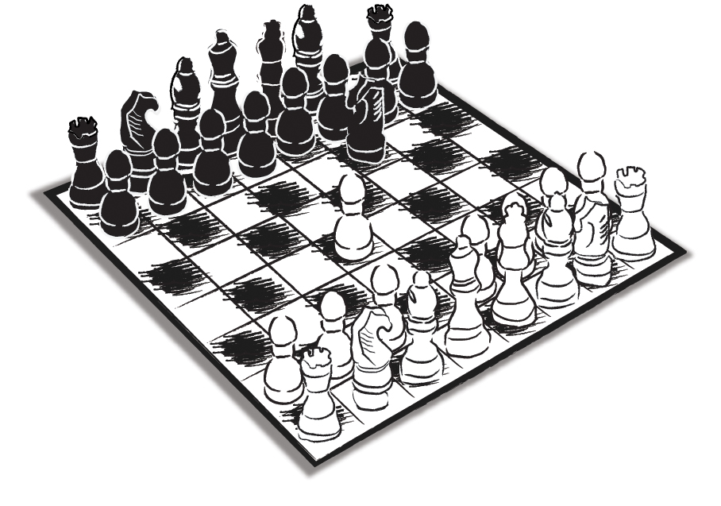

Koç Toplulugu’ndaki sunumumuzun üzerinden henüz iki ay geçmişti...
‘Henüz’ diyorum, çünkü Koç gibi büyük sistemlerle çalışmaya biraz aşina olanlar bilirler; pek çok alışkanlığı sorgulayacak ve değiştirecek üç yıllık bir iletişim projesinin hayata geçirilmek üzere karara bağlanması için bu tür büyük yapılarda, karar için geçen iki ay son derece kısa bir zaman dilimidir.
Değişimin en ayrılmaz parçası, değişime karşı sistem içinde geliştirilen dirençtir. Ve bu direnç, kuruluş ne kadar büyük, ne kadar eski ve durmuş oturmuş ise o kadar güçlüdür. Ayrıca bu direnç, ne hikmetse genelde gelmesi gereken yerlerden, yani üst yönetim, patron katı ya da çalışan kitlelerinden değil, bugüne kadarki pek çok araştırmada net bir şekilde ortaya çıktığı gibi, aslında eğitim, bilinç, bilgi düzeyleri diğer kademelerdeki çalışanlara oranla çok daha yukarılarda olan orta kademe yöneticilerden gelir.
Farklılık yaratalım, işi standart powerpoint sunum teknikleriyle geçiştirmeyelim diye marangoza yaptırdığımız ve nereye koyacağımızı bilemediğimiz o devasa piramidi Konsey Toplantı Salonu’nun deniz tarafındaki penceresinin önüne diktiğimizde, henüz Platon’un o ünlü sözünü bir yerlerde okumamıştık: “Korkaklar köle olur, korkmayanlar efendi...” Ya da ‘Kurtlar Vadisi’ adlı dizinin temel mesajını: “Sonunu düşünenler kahraman olamaz!”
Biz de korkmamıştık ve kazanmıştık aslında. Sonraları MESS ve TİSK’in başına geçecek olan İletişimden Sorumlu Başkan Tuğrul Kudatgobilik ve on yıllık Koç hizmetinden sonra Sabah gazetesine geçecek, oradan sonra da serbest danışmanlık yapmaya başlayacak olan zamanın Kurumsal İletişim Koordinatörü Can Çağdaş, iletişim modeli çalışması işini bir konsorsiyuma yaptırmaya karar vermişlerdi. Koskoca Koç Topluluğu’nun iletişim sistemini tek bir iletişimciye ya da tek bir danışmanlık şirketine emanet etmek istemiyorlardı. 90’lı yılların sonuydu ve Türkiye’de halkla ilişkiler sektörünün ‘ahval ve şeraiti’, bu iki üst düzey yöneticiye yerden göğe kadar hak verdirecek durumdaydı.
Salim Kadıbeşegil ve Selim Oktar’la sektörden tanışıklığımız vardı. Fakat henüz herhangi bir iş çevresinde bir araya gelip herhangi bir projeye önayak olmamıştık. Ayrıca böyle bir niyetimiz de yoktu.
Bizim yapmamız gerekeni Koç’un yöneticileri yapmış, üçümüzü bir araya getirip, üç yıl sürecek projeyi (sonradan bir yıl uzatıldı) tanımlamışlar ve hepimizin hayatını değiştirecek o çalışmaya üçümüzün birlikte girmesini sağlamışlardı.
Aradan iki ay geçmişti. Aileye sunum, başkanlara sunum falan derken, önerimizin kabul gördüğünü bildirmişler ve bizi Holding bünyesinde birlikte çalışacağımız ekiple tanışma toplantısına çağırmışlardı.
Bu tür toplantılar öncesinde âdet olduğu veçhile ‘3H’ kuralını uygulamıştık. Yani Hazır, Hızır, Huzur kuralını... Bu ‘3H’ kuralını biraz açalım: “Doğru Hazırlık yaparsan, Hızır gelir. Hızır gelince de Huzura kavuşursun...” Ben bu deyişi, o zamanlar Unilever’de Omo’nun bölge sorumlusu olarak çalışan Sinan Yaman’dan duyana kadar eksik bilirmişim. Sadece ‘1N2H’nin geçerli olduğunu düşünürmüşüm. Yani sen iyi Niyetliysen mutlaka yardımına Hızır yetişir, sen de Huzura kavuşursun... Hazırlık kısmı işin zor yanı ya, işimize gelmemiş demek ki...
İlişki yönetimine özel hazırlıklar ise birinci fazın en önemli öğesidir. Müşteriyi kaybetmek istemiyorsan önce onunla ilişkini doğru temeller üzerine kurup yöneteceksin ki, sunduğun hizmet ya da ürünü satma konusunda ön ve ‘yan’ yargılar etkili olmasın. Biz de oradan başlamıştık zaten. Kimler katılacak toplantıya? Pozisyonları, genel yaklaşımları nedir? Hangi konularda konuşurken dikkatli olmak lazım?
Bu soruların yanıtlarını verebilirseniz, en önemli safhayı kazasız belasız geçme şansını artırırsınız.
Toplantıya katılacak olanlarla ilgili en kritik bilgilerden biri de Ali Koç’un koyu bir Fenerbahçe taraftarı olması idi. Benim hem Galatasaray’ı tuttuğumu hem de çam devirme konusunda ustalığımı bilen arkadaşlarımız, “Aman ha, Ali Bey’in yanında Fenerbahçe’yle ilgili espri falan yapma. Hassas noktasıdır. Durduk yerde olumsuz puanla başlarız işe!”
“Tabii,” demiştim, “hiç üzülmeyin. Deli miyim ben? Hem ne alâkası var FB-GS konusunun bizim ilişkilerimizle? Biz işimizi düzgün yapmaya bakalım!”
Arkadaşlar şaşmıştı benim bu çıkışıma. Yüreklerine de su serpilmişti.
Toplantı günü geldi çattı. Koç Holding’e girişte sağdaki, Bülent Özaydınlı’nın CEO olduktan sonra da ofisini kullanmaya devam ettiği binanın en alt katında bize ayrılan ve her türlü ofis gereciyle donatılmış odada toplandık. Ali Koç’u bekliyoruz...
Yalnız talihsiz bir durum var. Toplantı bir pazartesi gününe alınmış. Yani maçların hemen ertesine. Ve o sıralar Fenerbahçe, taraftarlarını uzun süredir üzmekte. Aslında FB taraftarının üzülmesi için fazla bir şeye gerek yoktur. Takım birkaç maç arka arkaya puan kaybetsin, hemen moralleri bozulur. Başarıya o kadar odaklıdırlar ki, en küçük bir tökezleme bile millî felaket olarak yaşanabilir. Takım, işte yine böyle bir dönemden geçiyordu o günlerde...
Neyse, önce, Ali Koç’un birkaç oda öteden o gür ve özgüven yüklü sesi geldi, sonra toplantı odasının kapısı hızla açılarak kendisi odada belirdi.
Tuğrul Bey hepimizi tek tek tanıştırıyor. Ali Bey de kendisinde hiç eksik olmayan mizah anlayışıyla espriler yaparak herkesle tanışıyordu... Sıra bana geldi. Takdim edildik. Daha “Merhaba!” demeden, sanki ilahi bir varlık çeneme hükmetti ve çevredekilerin de şaşkın bakışları arasında ağzımdan, kasten söylenmiş izlenimini kolaylıkla yaratacak o klişe soru dökülüverdi: “Ne olacak bu Fenerbahçe’nin hali Ali Bey?”
Ali Koç, o anda son derece kibar ve mesafeli bir tavırla, “İyi olacak, iyi olacak!” dedi ve geçip yerine oturdu. Salim ve Selim’in bana, “Yaptın yine yapacağını!” diyen bakışlarına rağmen, biraz da Ali Bey’in derin bir FB tartışmasına girmemesinden cesaret alarak o anda içimden, “Oh, neyse ucuz atlattık!” diye geçirmiştim. Nasıl bittiğini bilemediğim toplantının sona ermesiyle birlikte kendimi binanın dışına atmıştım ki, kapının hemen solunda kaldırıma park etmiş duran ve devirdiğim çamın büyüklüğünü simgeleyen o küçücük şeyi fark ettim…
Bir Ford K idi bu… Ford’ların o zamanlar pek bir ‘in’ olan ve Ali Koç’un herhalde ‘iddiasızlığın iddiası’ ile kullandığı en küçük aracı… Araç ortadan ikiye bölünmüş gibi iki ayrı renge boyanmıştı. Yarısı sarı… Diğer yarısı tahmin edeceğiniz gibi, tabii ki lacivert… Hemen plakaya takıldı gözüm: 34 FB…
Sonraki yıllarda Fenerbahçe Spor Kulübü Yönetim Kurulu’na girecek ve futbol yöneticiliği kariyerini, takımı yönetim arkadaşlarıyla birlikte şampiyonluğa taşıyarak sürdürecek FB sevdasının en keskin simgeleri, olan biteni kafama balyoz gibi indirmek istercesine orada duruyordu.
O günlerde geçti zannettiğimiz ‘varta’yı hiç de ucuz atlatmamış olduğumu yıllar içinde görecektim.
Kendisinde şeytan tüyü olduğunu herkesin kabul ettiği, ilişkiye girdiklerinin dilediği zaman gönlünü kazanmasını bilen Ali Koç, belki biraz zor beğenen ve sert bir yöneticiydi ama vizyon sahibi, talepleri, fikriyatı olan iyi bir lider, cana yakın bir insandı. Özellikle 17 Ağustos depremi günlerinde gösterdiği performans, insanın yüreğini derinden etkileyecek nitelikteydi. O duyarlılık ve adanmışlık ‘oynanamazdı’, ancak içten gelerek hayata geçirilebilirdi. Dört yıllık Koç serüvenimiz içinde kendisiyle tartıştığımız olmuştur; daha iyiyi yakalamak için bizi sık sık eleştirmiş, biz de içimizden kendisine bazen içerlemişizdir. Onun da bize kızdığını gizleyemediği anlar olmuştur ancak bir kere bile azıcık da olsa içten pazarlıklı bir davranışına rastlamadık. Her zaman dobra ve doğruydu.
Öte yandan bana karşı davranışlarında o pazartesi günü başladığını hissettiğim, kesinlikle Koç’a rakip olmayan diğer holdinglere verdiğimiz hizmetler nedeniyle de biraz daha açıldığını sandığım mesafeyi her zaman korudu. Genelde öküz altında buzağı aramamaya çalışırım ama yine de yıllar sonra kendisinin o zamanlar başkanlığını yaptığı Koç Bilgi Grubu’nun konkurunda olanların kökeninde benim devirdiğim çamların bulunmadığına ikna olmam için çok şey gerek...
‘Şeytan doldurur’ diye sunuma şahsen katılmamış, arkadaşları göndermiştim. Ali Bey’in o konkurun jürisine davet ettiği üst düzey yöneticilerinin neredeyse tamamının, oylarını bizim arkadaşlara vermiş olduğunu sonradan öğrenecektik. Çocuklar toplam puanda en yakın rakibe açık ara fark atmışlardı. Tek karşı oy vardı, o da Ali Bey’indi. Bu durum konkurun iptal edilmesine yetmişti zaten. Bir sonraki konkura davet edilmediğimizi de bilmem söylememe gerek var mı?..
Ali Koç yıllar içinde bana karşı en ufak olumsuz bir tutum içinde olmadı. Defalarca karşılaştık. Son derece içten, sempatik ve kibardı.
Aradan sekiz yıl geçmişti, 2010’a gelmiştik. Şirket olarak hem Fenerbahçe Şükrü Saracoğlu Stadı’nda hem de Galatasaray’ın Türk Telekom Arena Stadı’nda çalışma arkadaşlarımızı ve/veya müşterilerimizi göğsümüzü gere gere davet edeceğimiz yerlerimiz olmalıydı. Yerleri üç yıllığına almak istiyorduk. Tabii ki bize yakışan(!) yerler olmalıydı. Her iki kulüpten mebzul miktarda eş dost vardı. Gir sıraya al, değil mi? Hayır… Ben yine sınırlarımı zorlayacak, büyük bir görgüsüzlük örneği vererek ille de Ali Koç’u arayacaktım. İçimdeki, patavatsızlık sınırlarını zorlayan çam devirme ekibi yine hâkimiyeti ele geçirmişti…
Ali Koç ona yakışanı yaptı. Son derece iyi davrandı. Biletlerin normal satışa çıkma süresini beklememi rica etti. Ben bir daha arayıp sormadım. Ama o unutmadı, beni arattı ve en iyi yerlerden birini almamızı sağladı.
Şeytan tüylerinden en ufak bir eksilme dahi olmamıştı…
Ben ise bu ‘ilişki yönetiminde’, beceriksizlik durumundan ‘özel müşteri’ (Client) ilişkileri adına ciddi dersler çıkarmıştım.
Bir: Mizahtan, şakadan, espriden, ancak iki tarafın da gülümseyebildiği durumlarda söz edilebiliyordu. Taraflardan biri geriliyorsa eğer, o zaman algılamada mizah değil, küçümsenme, tahrik olma türünden duygular öne çıkıyordu.
İki: İnsanlararası ilişkide süreçlerden çok beşerî duygular, kültür ve değerler önem kazanıyordu. Kuralları ve süreçleri kusursuz uygulamak, yönetmek, insanlararası ilişkileri de kusursuz yönetmeyi işin doğal sonucu olarak beraberinde getirmiyordu. İnsanlar süreçlerin çok üzerinde bir ‘duygusal kabul’ bekliyorlardı.
Üç: Otokontrol, seçilmiş davranış sergilemek, ilişkileri çalışmak, onlar için hazırlıklı olmak, ilişkileri sebep-sonuç bağlamında değerlendirmek; ille de yapmacık olmak, içten davranmamak, içten pazarlıklı olmak, özetle ‘kötü niyetli olmak’la aynı fotoğraf karesi içinde yer almak zorunda değildi.
Aynen kadın erkek ilişkilerinde olduğu gibi...